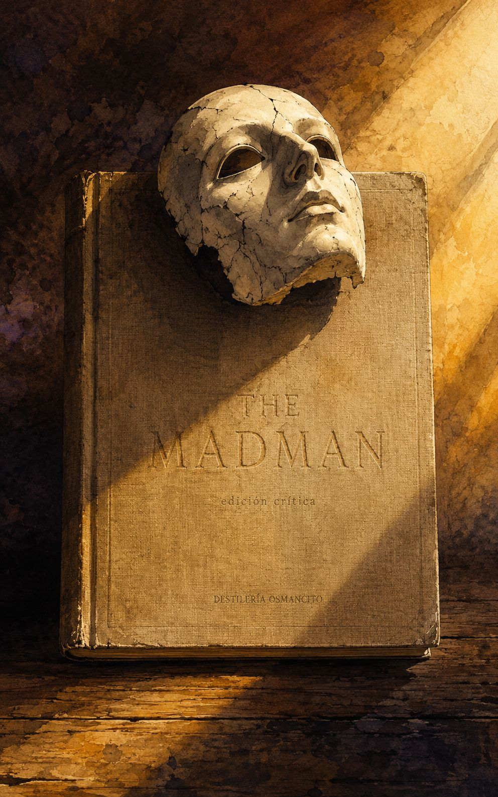
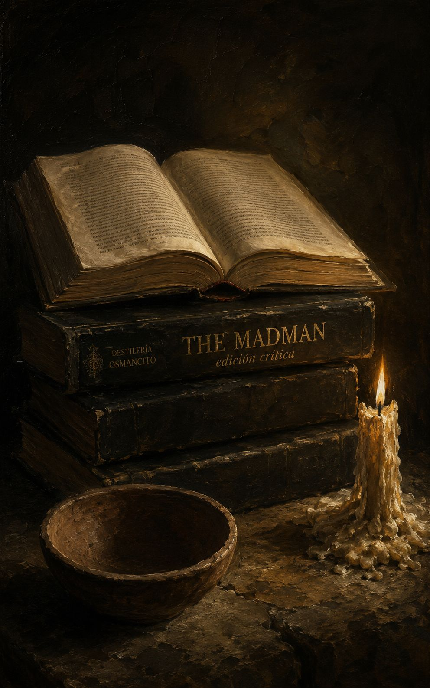
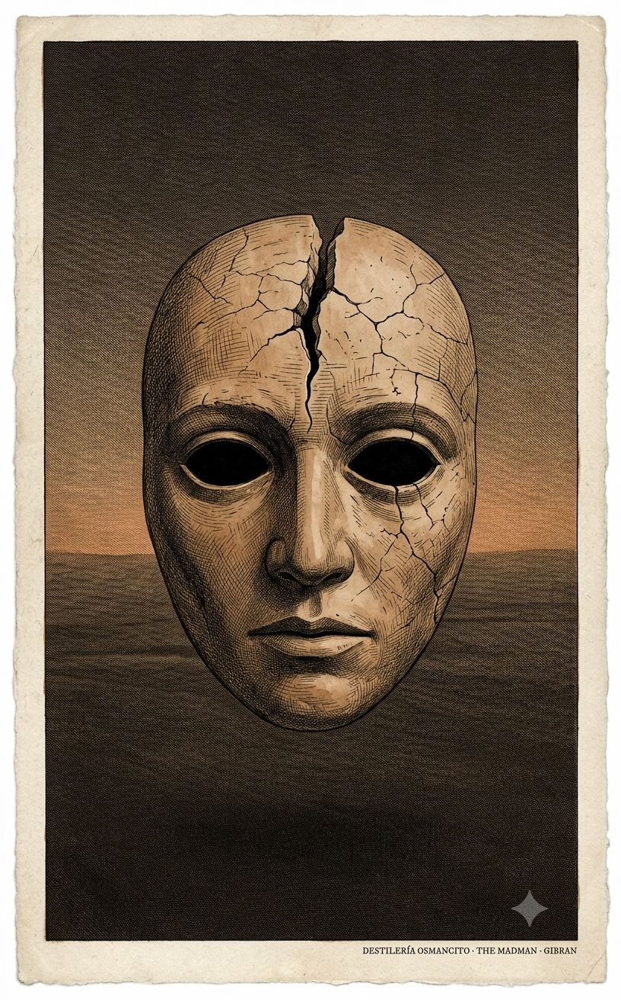
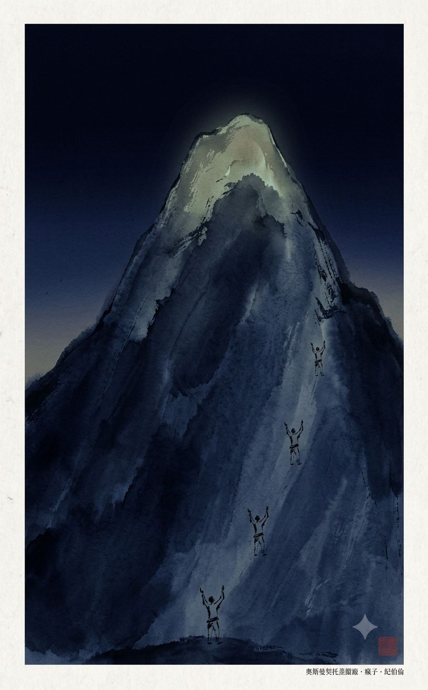
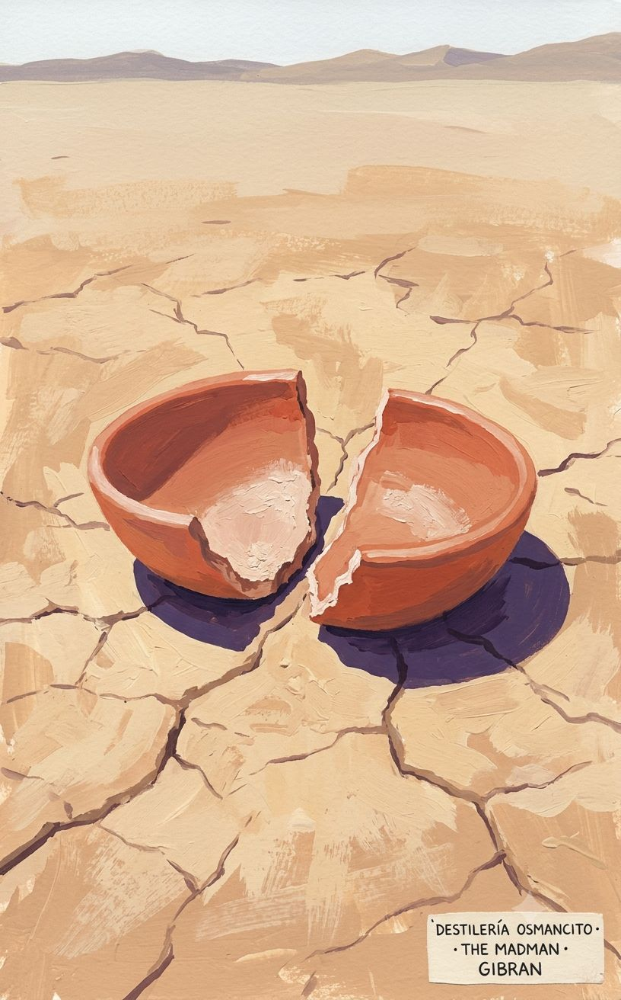
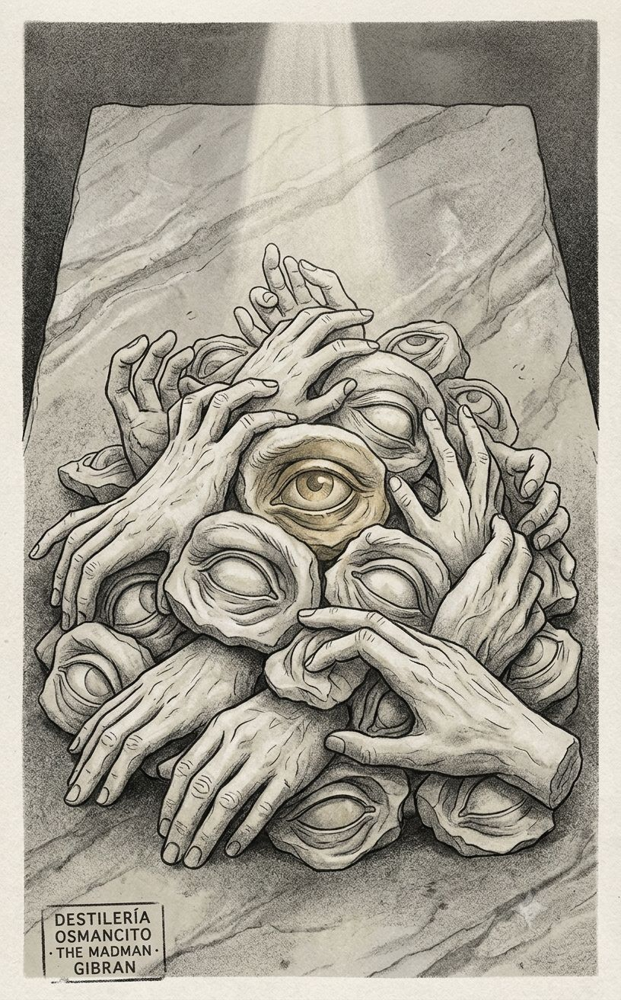

Destilería Osmancito






Destilería Osmancito
La palabra más frecuente de este libro no es madman sino thou — el tú bíblico, el tú de los profetas. El loco no habla como lunático: habla como Isaías. Esa sola trampa léxica lo revela todo: Gibran escribe un libro de locura en lengua de revelación, y la tensión entre esas dos autoridades —la del marginal y la del ungido— es el motor secreto de cada parábola. Lo que el libro llama libertad, la lengua que usa lo desmiente a cada página.
Un libro delgado con peso de piedra de montaña.
Hay textos que describen la liberación. Este la practica en cada frase —y esa diferencia no se puede fingir. The Madman llega como un objeto que ya está en movimiento cuando se abre: sus parábolas no esperan al lector, lo empujan. Lo que está vivo aquí no es el argumento sino el tono: algo entre el relámpago y la risa, entre el sermón y la burla de sí mismo. Nombrar lo que es este corpus —profecía, fábula, lírica, ninguna— es ya una forma de entrar a su pregunta central.
Título — The Madman: His Parables and Poems
Autor — Kahlil Gibran (1883–1931)
Año — 1918
Género — Parábolas y poemas en prosa
Extensión estimada — Aprox. 7.000 palabras · 28 páginas · 35 secciones
Idioma original — Inglés
Palabra más frecuente con contenido — Thou (44 ocurrencias). El corpus declara hablar desde la locura; su palabra más frecuente es el pronombre arcaico de los profetas y la Biblia King James. No confirma lo que declara ser: lo expone. El loco habla en lengua de Dios.
Un hombre descubre una mañana que le han robado las siete máscaras con las que vivía. Sale a la calle sin rostro, el sol le besa la cara desnuda por primera vez, y llama a eso locura. Desde esa pérdida inaugural, el libro avanza como una cadena de parábolas y poemas donde el narrador —siempre en primera persona o como voz que observa— contempla el mundo desde afuera de sus reglas: la ciudad, el templo, la montaña, el mar, el lenguaje mismo. No hay trama que avance ni resolución: hay acumulación de perspectivas que insisten en la misma verdad oblicua.
El Loco / El Narrador — Voz única y sin nombre. Ex-portador de siete máscaras, ahora sin protección. Su condición no es patológica sino iniciática: perdió la máscara, ganó la visión.
Dios — Presencia esquiva, convocada cuatro veces en «God» y finalmente responsiva cuando el narrador deja de suplicar y empieza a declarar igualdad.
La Noche — En «Night and the Madman», interlocutor que niega y finalmente reconoce al loco como hermano gemelo. La Noche funciona como el espejo más exigente del corpus.
Derrota — Personificación en el poema «Defeat»: entidad amada, compañera, opuesta a cualquier triunfo. La única figura del corpus que el narrador llama mía sin ambigüedad.
El libro abre con su única pieza de prosa narrativa extendida: el relato de cómo el narrador se convirtió en loco. Le robaron las siete máscaras que había fabricado en siete vidas. Corrió desnudo de rostro por el mercado; un joven lo señaló desde un techo y lo llamó loco; el sol tocó su cara real por primera vez y lo encontró hermoso. Esa es la inauguración del corpus entero: la locura como exposición involuntaria que se vuelve elección.
Lo que sigue no es secuencia sino constelación. Las treinta y cuatro piezas restantes orbitan ese núcleo sin desarrollarlo linealmente. Se organizan en tres modos que se alternan sin separación explícita.
Parábolas de ironía estructural. Son las más numerosas. En cada una, una lógica interna se lleva hasta su consecuencia absurda para revelar la arbitrariedad del orden establecido. «The Wise King» narra cómo el rey de Wirani bebe del pozo envenenado para que sus súbditos lo consideren cuerdo —la razón como conformidad, no como facultad. «The Blessed City» muestra una ciudad donde todos viven según las Escrituras: todos tienen un solo ojo y una sola mano, porque obedecieron la letra. «War» construye una cadena de justicia transferida que destruye al inocente por razones impecablemente formales. En «The Wise Dog», las certezas de cada especie son igualmente ciegas. En «The Two Hermits», dos hombres que se aman prefieren romper el único objeto que comparten antes de cederlo. Estas parábolas no enseñan —demuestran que toda enseñanza es trampa.
Piezas de yo lírico. Menos numerosas pero más densas emocionalmente. «My Friend» declara que el narrador miente siempre a su amigo, no por malicia sino porque el yo verdadero habita en la casa del silencio y ningún lenguaje puede alcanzarlo. «The Seven Selves» pone a los siete yos del narrador a disputar cuál tiene la carga más pesada: el de la pena, el de la alegría, el del amor, el del odio, el del pensamiento, el del trabajo. El séptimo —el que no tiene función asignada, el que solo existe en el vacío— contempla a los otros con pena y permanece despierto cuando todos duermen. «God» narra cuatro ascensos a la montaña sagrada: en los tres primeros, el narrador habla como esclavo, como criatura, como hijo; Dios no responde. En el cuarto, declara igualdad —«yo soy tu ayer y tú eres mi mañana»— y Dios se acerca. «Night and the Madman» es el más extenso y más musical: un diálogo donde el narrador afirma ser como la Noche y la Noche lo niega en cada vuelta, hasta la última, cuando cede.
Poemas en prosa. Los más breves y los más cargados. «Defeat» trata a la derrota como amante y única compañía fiel. «Crucified» narra cómo el narrador pidió ser crucificado para elevar a los que lo miraran —y mientras colgaba, el público le preguntó qué pecado expiaba. «The Great Longing» instala al narrador entre la montaña-hermano y el mar-hermana, tres soledades que se tocan sin consolarse. «When My Sorrow Was Born» y «And When My Joy Was Born» son poemas gemelos: el dolor crió compañía, fue cantado y envidiado; la alegría fue proclamada y nadie acudió, murió de aislamiento.
El libro cierra con «The Perfect World»: una plegaria irónica dirigida al «Dios de las almas perdidas, tú que estás perdido entre los dioses», donde el narrador se declara una semilla verde de pasión sin cumplir, un fragmento de un planeta quemado, incompatible con el mundo de las reglas perfectas que lo rodea. No es una conclusión —es una pregunta sin respuesta que el libro deja encendida.
Dos constantes atraviesan todo el corpus. Primera: la estructura de la parábola siempre incluye un giro en el que quien parecía cuerdo resulta ser el más ciego, o quien parecía ciego resulta ser el único que ve. Segunda: el narrador nunca se duele de su condición. La locura es, en cada pieza, un privilegio —incómodo, solitario, pero privilegio al fin.
El corpus llega como un objeto que no pesa lo que promete. Es delgado: menos de treinta páginas. Pero tiene una densidad de convicción que los libros voluminosos rara vez alcanzan. Lo que produce en quien lo recibe no es emoción sino algo más parecido a la presión —una presión continua, lateral, que no golpea de frente sino que empuja el borde de lo que uno da por sentado. Hay también algo que incomoda en su tono: es un libro absolutamente seguro de sí mismo, y esa seguridad no está argumentada sino declarada. No demuestra que la locura sea libertad —lo afirma con la contundencia de quien ya no necesita convencer a nadie porque ya no necesita a nadie. Eso es, a la vez, su mayor fuerza y su única fragilidad.
La voz que proclama la liberación del lenguaje está atrapada en el lenguaje más cargado de autoridad que existe. El loco —el que rompió con las máscaras, con las convenciones, con el entendimiento mutuo— habla en inglés bíblico King James: thou, thy, thee, shall, dost. Cada parábola que desmonta una institución está enunciada en la lengua de la institución por excelencia. No es contradicción irresuelta: es la tensión que da al corpus su peso específico. Si Gibran hubiera escrito en prosa coloquial, el loco sería excéntrico. Al escribir en lengua de profeta, el loco es un profeta que se llama a sí mismo loco.
Ser comprendido es ser esclavizado; no ser comprendido es estar solo. El narrador declara explícitamente en «My Friend» que prefiere no ser entendido —que el entendimiento ata. Pero el corpus entero es un acto de comunicación sostenida hacia un lector al que quiere llegar. Las parábolas son construidas con precisión retórica para que el lector las siga, las entienda y sienta el giro. Gibran fabrica meticulosamente la ilusión de que no le importa ser leído, para lectores a quienes necesita convencer de eso.
La soledad es el precio de la visión, pero la visión no tiene valor sin testigo. El narrador de «Crucified» pide ser clavado en la cruz para que otros puedan mirar hacia arriba. El narrador de «And When My Joy Was Born» proclama su alegría desde el techo durante siete lunas porque necesita que alguien venga a verla. El loco que encontró la libertad de la soledad no puede dejar de llamar a las puertas.
Destilería Osmancito
Las joyas más densas de este corpus no son las más largas: son las más cortas. Una mujer con la cara mitad pálida, mitad encendida, sentada entre dos hombres en los escalones del templo —una sola oración sin explicación— pesa más que parábolas de tres páginas. La estructura de la fábula le da a cada pieza una mecánica perfecta para el giro; lo que varía es si hay algo vivo dentro del mecanismo, o solo el mecanismo. Cuando hay algo vivo, el corpus produce joyas de la primera clase; cuando solo hay mecanismo, produce artesanía muy bien hecha. Ambas cosas están aquí, y saber cuáles son cuáles es ya una forma de leer a Gibran con honestidad.
La pieza inaugural abre la única pregunta del corpus y la responde de inmediato —pero la respuesta genera más tensión que la pregunta. El narrador corre sin máscaras por el mercado, el sol le besa la cara, y el momento en que es llamado loco por primera vez es el mismo momento en que descubre que el sol existe. La tensión no es entre locura y cordura: es entre la exposición involuntaria y la elección de quedarse expuesto. El movimiento lleva esa paradoja hasta su consecuencia lógica —el ladrón en la cárcel también está seguro— y la deja ahí, sin resolver. Temperatura: inaugural.
El ladrón que liberó
Un hombre se despierta y descubre que le han robado las siete máscaras que fabricó en siete vidas. Sale gritando a la calle. La gente se ríe. Un joven lo señala desde un techo y lo llama loco. Y en ese momento —el momento exacto del insulto, del señalamiento, de la designación más humillante— el sol le toca la cara por primera vez. No había sol antes de las máscaras robadas. Así, al final de la carrera, el hombre bendice a los ladrones. Hay aquí una mecánica que el corpus repetirá treinta y cuatro veces más: la pérdida como condición de la visión. Pero solo aquí la pérdida fue involuntaria —solo aquí no hubo elección— y ese detalle cambia el peso de todo lo que sigue.
La trampa de la seguridad
La pieza cierra con una advertencia que se autoaplica: la libertad de no ser comprendido es también una forma de cárcel, porque hasta el ladrón en la cárcel está a salvo de otro ladrón. No hay libertad sin límite. El loco que encontró la seguridad en la incomprensión acaba de descubrir que toda seguridad tiene la forma de un encierro. Lo dice y sigue caminando. Eso es todo.
La pieza escala en silencio durante tres mil años. Cuatro ascensos a la misma montaña, cuatro lenguajes distintos para dirigirse a lo mismo —esclavo, criatura, hijo, igual—, y solo el último recibe respuesta. La tensión no es teológica: es sobre el protocolo de la súplica y el momento en que el suplicante deja de suplicar. Dios no responde a quien se humilla; responde cuando el narrador lo declara su contemporáneo. El movimiento escala con una precisión casi matemática: cada subida repite la anterior con el mismo resultado hasta que la variable cambia. Temperatura: acumulación resuelta.
Cuatro mil años de puerta equivocada
Tres veces el hombre sube la montaña. Tres veces habla desde la posición del inferior —soy tu esclavo, soy tu hechura, soy tu hijo. Tres veces Dios pasa de largo como una tormenta, como alas, como niebla. A la cuarta subida el hombre dice: soy tu ayer, tú eres mi mañana; yo soy tu raíz, tú eres mi flor. Y Dios se inclina y lo abraza. Lo que cambia no es la devoción —sigue igual en las cuatro subidas— sino la posición desde la que se habla. Durante tres mil años el hombre eligió la puerta de la súplica. La puerta que abre está al lado.
El movimiento central de esta pieza trabaja una sola idea llevada hasta su extremo incómodo: la amistad como malentendido mutuo sostenido por amabilidad. No hay giro al final —el giro ocurre en la primera oración y el resto es su demostración. La estructura es acumulativa: cada párrafo agrega una capa nueva al mismo abismo. Lo que lo distingue de un ensayo filosófico es que termina en imagen física —dos manos entrelazadas, dos caminos separados— no en conclusión. Temperatura: íntima y fría a la vez.
La casa del silencio
Hay un hombre que tiene un yo verdadero que vive en la casa del silencio y no va a salir nunca. Todo lo que dice es una traducción de ese yo a un idioma que su amigo pueda tolerar. Cuando su amigo dice que el viento sopla hacia el este, él confirma; pero su mente está en el mar. Cuando su amigo sube al cielo, él baja al infierno y desde el otro lado del abismo los dos se llaman compañeros. Y al final: mi amigo, tú no eres mi amigo, pero ¿cómo te lo haré entender? Mi camino no es tu camino, y sin embargo caminamos juntos, mano a mano. La última imagen —las manos unidas, los caminos separados— es la definición más precisa de la soledad elegida que produce este corpus.
Dos movimientos breves. El primero: un espantapájaros que encuentra profundo placer en asustar, y el narrador que admite conocer ese placer. El espantapájaros responde que solo los rellenos de paja pueden conocerlo —y el narrador se va sin saber si lo insultaron o lo halagaron. El segundo: un año después el espantapájaros ha devenido filósofo, y los cuervos le construyen un nido bajo el sombrero. La secuencia entera es una demostración de cómo la autoridad se vacía sola con el tiempo. Temperatura: burlona.
El filósofo con nido
Un espantapájaros que un año atrás tenía respuestas sobre el placer de asustar ahora sirve de casa a los mismos animales que debía espantar. No hay comentario. No hace falta.
Un solo movimiento tenso y preciso: madre e hija se encuentran en el jardín sonámbulas y se dicen la verdad que nunca se dirán despiertas. La tensión está en la brecha entre los dos estados —dormidas, dicen lo real; despiertas, dicen lo conveniente— y la pieza la cruza en exactamente dos palabras: darling y dear. Sin explicación. Sin moraleja. Temperatura: doméstica y letal.
Lo que se dice dormida
Una madre y su hija se encuentran sonámbulas en el jardín. La madre dice: eres mi enemiga, destruiste mi juventud, quisiera matarte. La hija dice: eres una vieja egoísta, te interpondras entre mi yo libre y yo, quisiera que estuvieras muerta. Canta un gallo. Despiertan. La madre dice suavemente: ¿eres tú, cariño? La hija dice suavemente: sí, querida. No hay más. Las dos verdades duermen de nuevo.
La pieza funciona como máquina de ironía en dos tiempos: los gatos oran para que llueva ratones; el perro sabe por tradición patrilineal que lo que llueve son huesos. Cada especie espera la versión del cielo diseñada a su medida. El giro no está en el contraste entre las especies sino en la equivalencia de su ceguera —el perro no es más lúcido que los gatos, solo tiene otra certeza igualmente absurda. Sin joyas separables. La pieza es ella misma la joya, indivisible. Se registra íntegra.
Cada especie reza por su propio menú
Un perro pasa junto a una congregación de gatos que ora con fervor. El gato más solemne les dice a los hermanos: recen sin dudar y lloverán ratones. El perro escucha y sigue de largo, satisfecho de su sabiduría: ha sido escrito, lo sabe él y lo sabían sus padres, que lo que llueve de la fe y la súplica no son ratones sino huesos. El perro no ve que está haciendo exactamente lo mismo.
Un movimiento de escalada irónica perfecta. Dos ermitaños que se aman tienen un cuenco. Uno quiere partir. Quiere justicia. La justicia exige dividir el cuenco. El otro ofrece todo —el cuenco entero— y el primero lo rechaza porque no quiere caridad. Quiere lo suyo. El cuenco se va a romper. Y en el momento en que el más joven acepta romperlo, el mayor lo llama cobarde por no querer pelear. La estructura lleva la lógica del principio hasta donde ya no puede sostenerse sin contradecirse, y allí la abandona. Temperatura: exasperante.
La justicia que prefiere los pedazos
Dos hombres que se aman tienen un cuenco de barro. Es todo lo que tienen. Uno decide partir. Dice que quiere su parte. El otro le ofrece el cuenco entero. El primero lo rechaza: eso sería caridad, no justicia. El otro propone echarlo a suertes. El primero se niega: no confiará la justicia al azar. El otro dice entonces: rompámoslo. El primero, al oír eso, se oscurece en el rostro y dice: cobarde. Nunca quiso el cuenco. Quería pelea. Eso tampoco lo dice nadie.
La pieza más corta del corpus después de The Two Cages y On the Steps of the Temple. Un hombre tiene un valle lleno de agujas. La madre de Jesús viene a pedirle una, para remendar la túnica de su hijo antes de ir al templo. El hombre le da un discurso sobre el dar y el tomar. No hay joya separable —la pieza entera es el chiste, y el chiste es la joya. Se registra íntegra.
El erudito de las agujas
Alguien tiene un valle lleno de agujas. La madre de Jesús le pide una. Él le da un discurso erudito sobre el dar y el tomar, para que se lo lleve a su hijo antes de ir al templo. No le da la aguja.
El movimiento más extenso de la primera mitad del corpus. Seis yos compiten por cuál carga el peso más insoportable —el del dolor, el de la alegría, el del amor, el del odio, el del pensamiento, el del trabajo. Todos amenazan con rebelarse. La tensión sube por acumulación simétrica hasta que el séptimo yo habla: el que no tiene ninguna función, el que existe en el vacío, el que mira a los otros con envidia porque al menos ellos tienen un destino. Los seis se duermen consolados. El séptimo se queda mirando la nada. Temperatura: perturbadora.
El que no tiene para qué rebelarse
Seis yos compiten por cuál sufre más. El yo del dolor, el de la alegría, el del amor, el del odio, el del pensamiento, el del trabajo: cada uno tiene su queja, su causa, su argumento. El séptimo escucha y al final dice: qué extraño que todos quieran rebelarse, siendo que cada uno tiene un destino fijo que cumplir. Yo quisiera ser como ustedes: un yo con una función determinada. Pero yo no tengo nada. Soy el yo-que-no-hace-nada, el que se sienta en el vacío mudo mientras ustedes recrean la vida. Los seis lo miran con lástima y se duermen en paz. El séptimo sigue despierto, mirando la nada que está detrás de todas las cosas.
Un movimiento de cadena causal llevado hasta el absurdo con una lógica impecable en cada eslabón. Un ladrón pierde un ojo en la casa equivocada. Pide justicia. Le dan justicia. El culpable argumenta que necesita sus dos ojos para ver ambos lados del tejido. Señala a un zapatero. Al zapatero le sacan un ojo. Y la justicia queda satisfecha. La pieza se llama War pero no nombra ninguna guerra. El título es la única metáfora que el texto no explica. Temperatura: mecánica, clínica, helada.
La justicia que necesita un inocente
Un ladrón pierde un ojo en la oscuridad. Pide justicia al príncipe. El príncipe la imparte: le sacarán un ojo al tejedor cuyo telar fue el culpable. El tejedor acepta la sentencia pero señala que necesita dos ojos para ver ambos lados de la tela. Propone al zapatero. El zapatero no había hecho nada. Pero tenía dos ojos y en su oficio con uno era suficiente. Le sacan el ojo. La justicia queda satisfecha. La pieza se llama Guerra.
Una imagen sola, sin movimiento. El zorro ve su sombra al amanecer y decide que almorzará un camello. Al mediodía ve su sombra otra vez y decide que un ratón bastará. Sin joya separable —la pieza es ella misma el giro y dura tres oraciones. No hay estuche que abrir aquí; el estuche es la joya. No se descompone.
Un movimiento de inversión total, trabajado con pasos contados. El rey sano en un mundo enloquecido. El dilema: gobernar cuerdamente a quienes lo llaman loco, o beber el agua envenenada y reinar como uno de ellos. La solución no es heroica —es pragmática y amarga. Temperatura: sardónica.
El rey que bebió del pozo
Una bruja envenena el único pozo de una ciudad. Todos enloquecen menos el rey y su chambelán. Al día siguiente, los locos susurran por las calles: el rey está loco, hay que destronarlo. Esa noche el rey ordena llenarle una copa de oro con el agua del pozo. Bebe. Le da a beber a su chambelán. Y al día siguiente hay gran regocijo en la ciudad porque el rey ha recobrado la razón. El rey no recobró nada. Eligió ser incomprensible para los cuerdos antes que incomprensible para los locos.
Un movimiento de ironía acumulada que se cierra con un giro hacia afuera —hacia quien lo narra no participa. Tres hombres —el tejedor de mortajas, el carpintero de ataúdes, el cavador de tumbas— celebran en la taberna la buena jornada. El posadero cuenta los ingresos. Su mujer imagina un futuro mejor para su hijo: que no trabaje tan duro, que estudie, que se haga sacerdote. El giro está en que el ciclo que ella imagina romper —el trabajo duro, la dependencia de la muerte ajena— es exactamente el que el sacerdocio perpetuaría. Nadie lo dice. Temperatura: irónica, callada.
Los que festejan y la que sueña
Un tejedor vendió un sudario. Un carpintero vendió un ataúd. Un sepulturero cobró el doble por una tumba. Los tres beben y comen y están alegres bajo la luna. El posadero suma las ganancias y la esposa imagina: si siempre fuera así, podríamos educar a nuestro hijo, no tendría que trabajar tan duro, podría hacerse sacerdote. Nadie le dice que el sacerdocio también vive de la muerte.
Una pieza de tres oraciones. Un hombre inventa un placer nuevo. Un ángel y un diablo corren hacia su casa y se pelean en la puerta: uno lo llama pecado, el otro virtud. Fin. Sin joya separable —la pieza es la joya entera. Pero tiene una implicación que el corpus no desarrolla y que pesa: el placer nuevo no le pertenece al que lo inventó. En el instante de crearlo, ya es territorio en disputa.
Un movimiento largo de pérdida gradual. El narrador nace sabiendo un idioma que nadie a su alrededor entiende. A los tres días intenta decirle a su madre que está incómodo —nadie oye. A los veintiún días corrige al sacerdote —nadie entiende. A los siete meses refuta al adivino —nadie escucha. Treinta y tres años después se encuentra con el adivino, que le dice que siempre supo que sería músico. Y el narrador le cree. La pieza termina en el instante exacto en que la persona que tenía razón desde el principio olvida que la tenía. Temperatura: melancólica, precisa.
El idioma que se olvida
Un hombre nació sabiendo un idioma que nadie más hablaba. De recién nacido intentó decirle a su madre que la leche era amarga —no lo entendieron. De niño le dijo al sacerdote que si él era cristiano, la madre del sacerdote en el cielo debería estar triste —no lo entendieron. Al adivino le dijo que era músico, no estadista —no lo entendieron. Treinta y tres años después el adivino le dice: yo siempre supe que serías músico, lo profeticé desde tu infancia. Y el hombre le cree. Había olvidado el otro idioma.
Un movimiento coral que se resuelve por fuga, no por síntesis. Las semillas debaten su futuro —una con esperanza, otra con escepticismo, una tercera con nihilismo, luego más voces hasta que ya no se distingue nada. El narrador no arbitria ni concluye: se muda al corazón de un membrillo, donde las semillas son pocas y casi silenciosas. La solución al ruido no es la respuesta correcta sino la distancia. Sin joya separable —la pieza entera es un movimiento de alta densidad que no cristaliza fuera de sí misma.
La pieza más corta del corpus. Dos jaulas, un león, un gorrión sin canto. Cada amanecer el gorrión saluda al león: buenos días, hermano prisionero. Tres oraciones. Sin joya separable porque la pieza es indivisible —pero produce una de las imágenes más persistentes del corpus: el pequeño que nombra lo que el grande no puede decir. El gorrión no tiene canción. Tiene saludo.
Un movimiento de ironía teológica con cierre físico. Tres hormigas sobre la nariz de un hombre dormido al sol. Una predica sobre la Hormiga Suprema, omnipresente e invisible. Las otras se ríen. El hombre se mueve, se rasca la nariz. Las tres quedan aplastadas. La pieza no discrimina: la hormiga creyente y las escépticas mueren juntas. La verdad o falsedad de la teología de la hormiga predicadora no importa en absoluto al resultado. Temperatura: implacable.
La Hormiga Suprema y la nariz
Tres hormigas caminan sobre lo que creen que son colinas y llanuras yermas —en realidad es la nariz de un hombre durmiendo en el sol. Una de ellas eleva la cabeza y les anuncia a las otras: estamos paradas en la nariz de la Hormiga Suprema, cuyo cuerpo es tan grande que no podemos verlo, cuya voz es tan poderosa que no podemos oírla. Las otras se ríen. El hombre se mueve y se rasca. Las tres quedan aplastadas sin distinción.
Tres oraciones, un movimiento completo. El narrador entierra uno de sus yos muertos. El sepulturero dice que de todos los que vienen a enterrar, solo él le gusta. ¿Por qué? Porque todos los demás vienen llorando y se van llorando. Solo él viene riendo y se va riendo. Sin joya separable —la pieza entera es la joya. Pero la imagen que deja —enterrar los propios yos con la misma ecuanimidad con que se entierra cualquier otra cosa— atraviesa el corpus entero hacia atrás y hacia adelante.
Una sola oración. Una mujer sentada entre dos hombres. Un lado de la cara pálido, el otro encendido. Sin joya separable porque la pieza es una sola imagen indivisible. Pero la imagen sobrevive a cualquier contexto —no necesita a Gibran, no necesita el corpus, no necesita explicación. Es la única pieza del libro que guarda silencio completo sobre lo que significa.
El movimiento más ambicioso del corpus en términos de construcción narrativa. Un hombre viaja cuarenta días en busca de la ciudad donde todos viven según las Escrituras. La encuentra. Todos tienen un solo ojo y una sola mano. Los pregunta. Lo llevan al templo. Hay un montón de manos y ojos secos. Leen las Escrituras literalmente. Solo los niños que aún no saben leer están enteros. El hombre se va. Temperatura: alegórica, cortante.
El montón en el altar
Un hombre llega a la ciudad bendita donde todos viven según las Escrituras. La ciudad existe: está llena de personas con un solo ojo y una sola mano. En el templo hay un altar. Encima del altar, un montón de manos y ojos. Secos. Sobre el altar, la inscripción: si tu ojo derecho te ofende, arráncalo; si tu mano derecha te ofende, córtala. Solo los niños que todavía no saben leer tienen dos ojos y dos manos. El narrador sale de la ciudad de inmediato. Él ya sabe leer.
Los niños que aún no leen
No hay ningún habitante entero en la ciudad santa, salvo los demasiado jóvenes para comprender las Escrituras. La santidad completa requiere la mutilación completa. Los únicos salvos son los que aún no fueron alcanzados por la letra. Esta es la consecuencia que la pieza no nombra pero entrega intacta: la inocencia como ignorancia provisional, y la educación como ruta hacia la amputación.
Un movimiento mínimo con un giro inesperado en el cierre. El Dios Bueno saluda al Dios Malo. El Dios Malo está malhumorado: lo confunden con el Bueno. El Dios Bueno responde que a él también lo confunden con el Malo. El Dios Malo se aleja maldiciendo la estupidez de los hombres —lo cual, viniendo del Dios Malo, suena a queja profesional razonable. El giro está en que la confusión entre bien y mal incomoda igualmente a ambos. Temperatura: seca.
Los dioses que se confunden
El Dios del Bien y el Dios del Mal se encuentran en la cima de la montaña. El Dios del Mal está de mal humor: lo han llamado por el nombre equivocado demasiadas veces últimamente. El Dios del Bien dice: a mí también. El Dios del Mal se aleja maldiciendo la estupidez humana. Es la única vez en el corpus que el Dios del Mal tiene razón.
El poema más largo del corpus y el único que adopta el registro del himno sostenido. Un solo movimiento de apóstrofe sin giro: la Derrota como amante, como compañera, como única interlocutora fiel. No hay ironía aquí —es el único espacio del libro donde el narrador habla sin disfraz y sin paradoja. La densidad es máxima. Temperatura: exaltada, solitaria.
Lo que solo la derrota puede decir
Hay cosas que la victoria no puede hacer: no puede decirle a nadie el sonido de las alas batiendo, ni el impulso del mar, ni las montañas que arden de noche. Solo la derrota puede trepar por el alma rocosa y empinada del narrador. Solo ella lo acompaña cuando cava tumbas para todo lo que muere dentro de él. Y al final, juntos —el narrador y su Derrota— se vuelven peligrosos. La victoria corona y encadena. La derrota libera al que sabe recibirla.
El movimiento más musical del corpus —una letanía de reclamaciones y negaciones en siete tiempos. El narrador afirma parecerse a la Noche en siete registros. La Noche lo niega seis veces señalando exactamente dónde se queda corto. En la séptima vuelta la Noche cede —no completamente, sino con una pregunta que es ya reconocimiento. El cierre es una sola afirmación sin negación: tú revelas el espacio, yo revelo mi alma. Temperatura: incandescente.
La séptima negación
Seis veces el narrador dice: soy como tú, Noche. Seis veces la Noche responde con el defecto exacto que lo delata —todavía miras atrás para ver qué huella dejaste, todavía te aterroriza el abismo, todavía llevas tu yo pequeño como compañero. La Noche sabe exactamente qué le falta al narrador. En la séptima vuelta ya no niega: pregunta. Y la pregunta es suficiente. El narrador y la Noche son hermanos gemelos porque él revela el alma como ella revela el espacio. No son lo mismo. Pero están hechos del mismo material.
Cuatro oraciones, cuatro tipos de cara. Una cara con mil semblantes. Una cara que es solo una cara. Una cara cuya belleza hay que levantar para ver. Una cara vieja surcada de nada, una cara joven en la que todo está grabado. El narrador dice que conoce las caras porque mira a través del tejido que teje su propio ojo. Sin joya separable —la pieza es una cadena de paradojas que funciona junta o no funciona. La última oración es la única que sobrevive sola: miro a través del tejido que teje mi propio ojo y veo la realidad debajo. Pero sacada de contexto pierde la tensión que la produce.
Un movimiento de acumulación y clausura. El narrador y su alma buscan un lugar solitario para bañarse desnudos junto al gran mar. Encuentran siete tipos de hombre, uno tras otro, cada uno con su relación defectuosa con el mar — el pesimista, el optimista, el filántropo, el místico, el idealista, el realista, el puritano. Ante cada uno el alma dice: aquí no, nos verían. El movimiento termina con tristeza: no hay lugar solitario donde desnudarse. Y dejan ese mar para buscar el Mar Mayor. Temperatura: melancólica, taxonómica.
El realista y la concha
De los siete tipos que encuentran junto al mar, el que fija la imagen más duradera no es el más dramático: es el realista. Un hombre de espaldas al mar, escuchando una concha. Proclama: este es el mar, el mar profundo, el mar vasto y poderoso. Y tiene la espalda vuelta al mar entero, ocupado con un fragmento. El alma lo define con precisión quirúrgica: el que da la espalda al todo que no puede comprender y se ocupa de un fragmento. El corpus entero podría ser la acusación opuesta.
Un movimiento de paradoja pura, construido en dos partes que se contradicen mutuamente. El narrador pide ser crucificado para elevar a los que lo miren. Lo crucifican. Desde la cruz, mientras cuelga, el público le pregunta de qué se arrepiente, por qué se sacrifica, qué gloria busca. Y el narrador responde que no se arrepiente, no se sacrifica, no busca gloria: simplemente tenía sed de su propia sangre, tenía hambre de bocas en sus heridas, tenía necesidad de días más grandes. Y anuncia que los crucificados no se cansan —que habrá que crucificarlos entre cielos y tierras cada vez más grandes. Temperatura: exaltada, desconcertante.
La sed que solo la sangre propia sacia
Un hombre pide ser crucificado. Lo crucifican. Desde la cruz, mientras sonríe, le preguntan de qué pecado se arrepiente. No me arrepiento de nada, dice. ¿Por qué se sacrifica, entonces? No me sacrifico. ¿Qué gloria busca? Ninguna. Tenía sed —y pedí que me dieran mi propia sangre a beber. Estaba mudo —y pedí heridas para tener bocas. Estaba encerrado en vuestros días y vuestras noches —y busqué una puerta hacia días y noches más grandes. La crucifixión no fue un martirio. Fue una necesidad de escala.
Tres preguntas, tres respuestas. El narrador ve a un ciego sentado solo. Su amigo dice que es el hombre más sabio del país. El narrador se acerca y habla con él. Le pregunta desde cuándo está ciego. Desde el nacimiento, responde. ¿Y qué camino de sabiduría sigue? Soy astrónomo. Y se lleva la mano al pecho: aquí observo todos estos soles y lunas y estrellas. Sin joya separable —la pieza entera es la joya, indivisible. Pero deja una imagen que no se olvida: el hombre que estudia el universo mirando hacia adentro porque nunca pudo mirar hacia afuera.
Un poema de soledad que no se queja —que la enuncia con la misma calma con que se enuncia un hecho geológico. El narrador entre la montaña-hermano y el mar-hermana. Los tres solos juntos durante eones, sin consuelo. La pieza no tiene giro: tiene repetición deliberada —abre y cierra con la misma frase, como una costa que siempre vuelve al mismo punto. Temperatura: vasta, quieta.
Tres soledades en abrazo
Un hombre está sentado entre la montaña y el mar. Son sus hermanos. Los tres llevan eones juntos, mirándose desde el primer amanecer gris que los hizo visibles el uno al otro. Han visto nacer y morir mundos enteros. Siguen jóvenes y ávidos. Y siguen solos: sin pareja, sin visita, en un abrazo a medias que no consuela. En el silencio de la noche la hermana-mar murmura en su sueño el nombre de un dios de fuego que no conoce. El hermano-montaña llama a una diosa distante y fría. Y el narrador no sabe a quién llama. Solo sabe que llama.
Un movimiento circular que cierra exactamente donde abrió, pero con los roles invertidos. La hoja de hierba acusa a la hoja de otoño de hacer ruido y arruinar sus sueños. La hoja la insulta desde su altura. La hoja cae, duerme, y en primavera despierta convertida en hoja de hierba. Llega el otoño. Las hojas caen. Y la ex-hoja, ahora hierba, murmura exactamente la misma queja. La pieza no comenta nada. Temperatura: circular, implacable.
La queja que se hereda
Una hoja de hierba le dice a una hoja de otoño: haces demasiado ruido al caer, dispersas mis sueños de invierno. La hoja de otoño la insulta: criatura sin canción, sin altura, sin nobleza. La hoja cae. Duerme. En primavera es una hoja de hierba. En otoño, cuando las hojas caen sobre ella, murmura para sí: estas hojas de otoño, hacen tanto ruido, dispersan mis sueños de invierno. La queja no pertenecía al personaje. Pertenecía a la posición.
Un movimiento de exclusión por mayoría. El Ojo dice que ve una montaña cubierta de niebla azul. Los otros sentidos consultan: el Oído no la escucha, la Mano no la toca, la Nariz no la huele. La montaña no existe. Algo debe andar mal con el Ojo. Temperatura: epistemológica, seca.
La montaña que nadie más percibe
El Ojo anuncia que más allá de los valles hay una montaña cubierta de niebla azul. El Oído escucha pero no la oye. La Mano la busca y no la encuentra. La Nariz no la huele. Entonces los cuatro se ponen de acuerdo: algo debe andar mal con el Ojo. La montaña existe. Pero la mayoría no puede alcanzarla. Y la mayoría tiene razón: algo anda mal con el Ojo.
Un movimiento de intercambio completo. Dos eruditos —uno ateo, uno creyente— debaten en el mercado durante horas. Esa noche el ateo va al templo y se arrodilla. El creyente quema sus libros sagrados. La pieza no explica qué ocurrió durante el debate. Esa es su única elipsis y es perfecta: todo pasó entre las horas de disputa y la noche, y el lector no estuvo ahí. Temperatura: giratoria.
Lo que el debate hizo sin que nadie lo viera
Dos eruditos —uno que niega a los dioses, uno que los defiende— debaten durante horas en el mercado frente a sus seguidores. Se separan. Esa misma tarde el que negaba va al templo y reza. El que creía quema sus libros. No se explica nada. No hace falta.
Un poema de amor a lo que duele, con su consecuencia exacta: cuando el dolor muere, el que lo crió pierde el único idioma que los demás podían escuchar. No hay giro —hay una pérdida progresiva que termina en la imagen de la voz que ya nadie oye. Temperatura: elegíaca.
El hombre cuyo dolor ha muerto
Un hombre crió su dolor como se cría un hijo: con cuidado, con ternura. El dolor creció fuerte y hermoso. Cuando caminaban juntos, la gente los miraba con ojos suaves. Cuando cantaban, los vecinos se asomaban a las ventanas. Había incluso quien los envidiaba, porque el dolor era una cosa noble. Luego el dolor murió, como mueren todas las cosas. Y ahora cuando el hombre habla, sus palabras caen pesadas sobre sus propios oídos. Cuando canta, nadie viene. Cuando camina, nadie lo mira. Solo en sueños escucha voces que dicen con lástima: ahí está el hombre cuyo dolor ha muerto.
El poema gemelo, pero invertido y más breve. La alegría nació y el narrador la proclamó desde el techo. Nadie vino durante siete lunas. La alegría se fue poniendo pálida por falta de testigos. Murió de aislamiento. Y ahora el narrador solo recuerda su alegría muerta cuando recuerda su dolor muerto. Temperatura: desolada, precisa.
La alegría que murió de ser invisible
Un hombre tuvo una alegría y la proclamó desde el techo durante siete lunas. Nadie acudió. La alegría se fue poniendo pálida porque ningún otro corazón la sostuvo. Murió de aislamiento. El dolor tuvo compañía. La alegría, no. El hombre solo recuerda su alegría cuando recuerda su dolor —las dos muertes juntas, la única forma en que la segunda existe todavía.
El cierre del corpus. Una plegaria al Dios de las almas perdidas, que está él mismo perdido entre los dioses. El narrador describe el mundo perfecto —el mundo de las reglas, los horarios, las virtudes medidas, los pecados pesados, los muertos enterrados según método— y luego pregunta por qué él, semilla verde de pasión sin cumplir, fragmento de planeta quemado, está aquí. No es pregunta retórica —el corpus entero ha sido el intento de responderla sin lograrlo. Temperatura: plegaria sin respuesta, incandescente al final.
El inventario de la perfección
El mundo perfecto tiene horarios para todo: comer, beber, dormir, trabajar, jugar, cantar, amar, robar al vecino con una sonrisa, dar limosna con un gesto elegante, destruir una reputación con una palabra, quemar un cuerpo con un aliento —y luego lavarse las manos cuando el día termina. Incluso las tumbas del alma están marcadas y numeradas. Es el mundo más excelente que existe. Y el narrador, que es una semilla verde, un torbellino sin rumbo, un fragmento de planeta quemado, pregunta al Dios de los perdidos: ¿por qué estoy yo aquí?